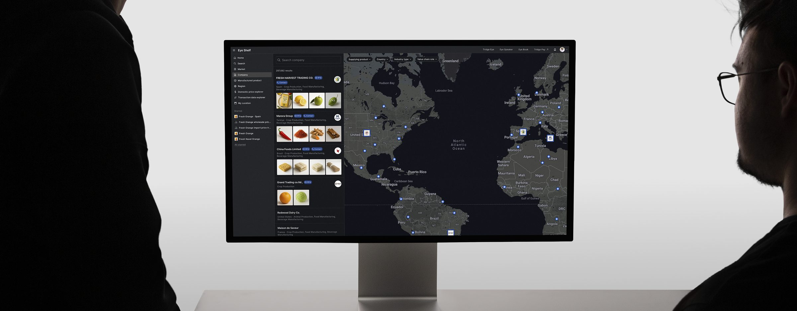
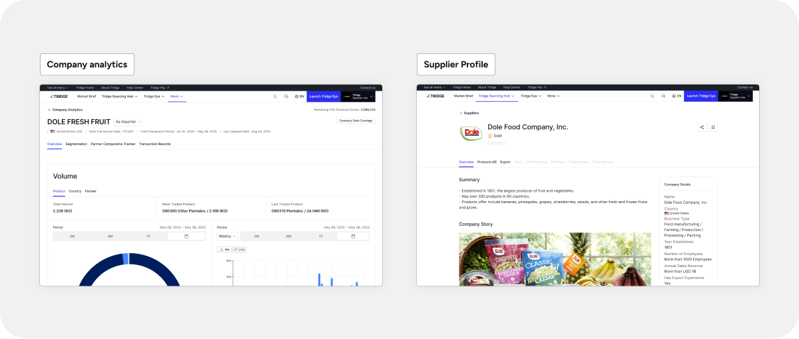
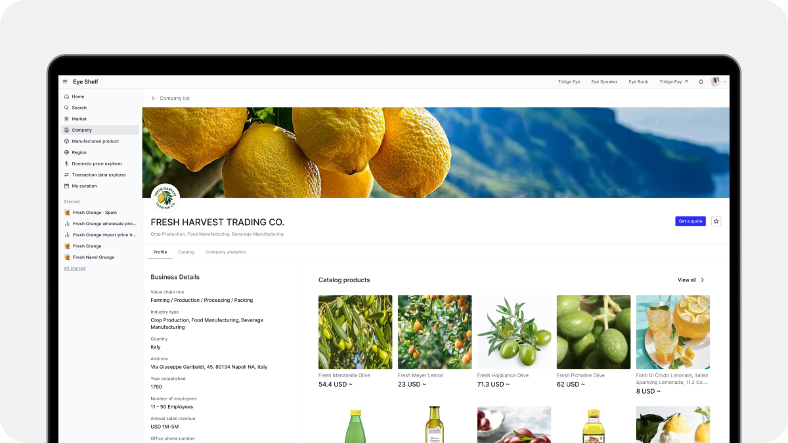
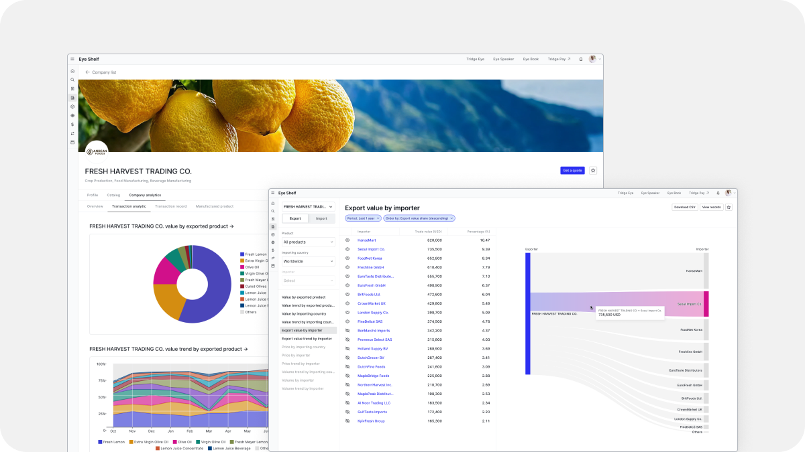
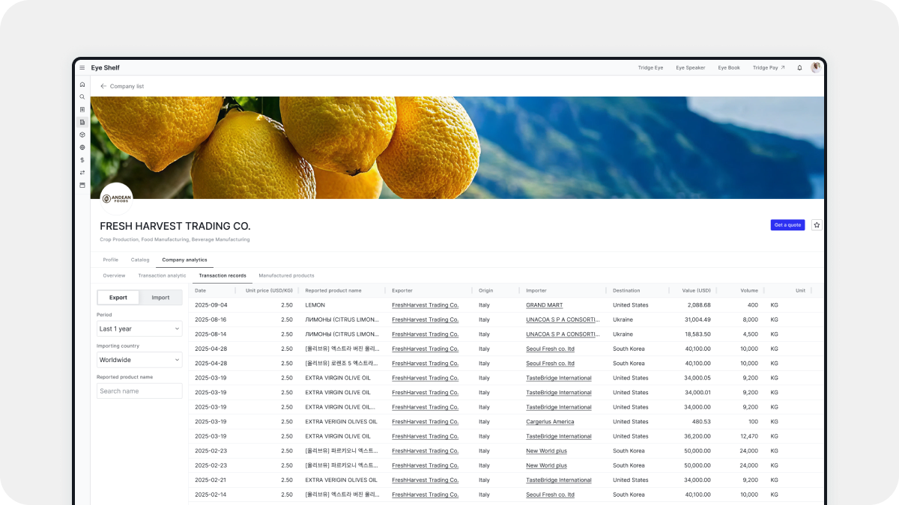
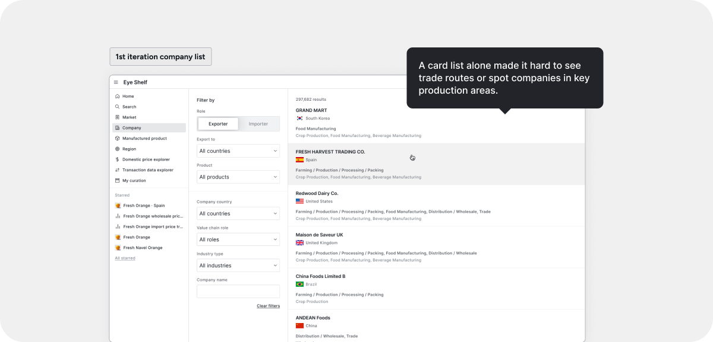
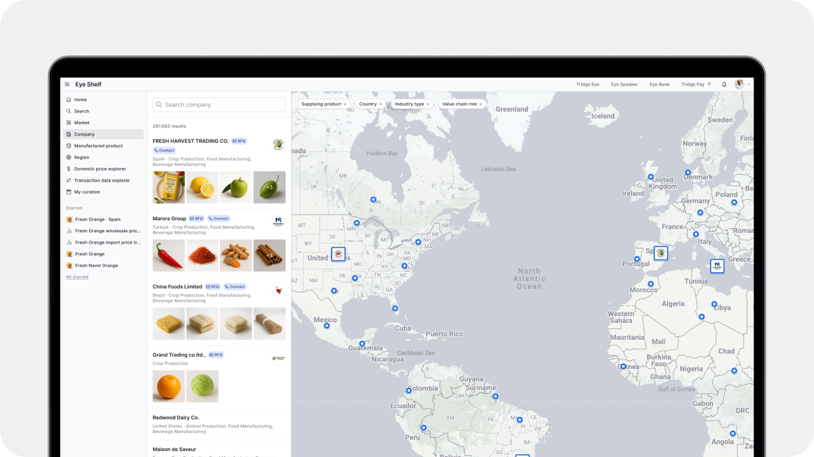
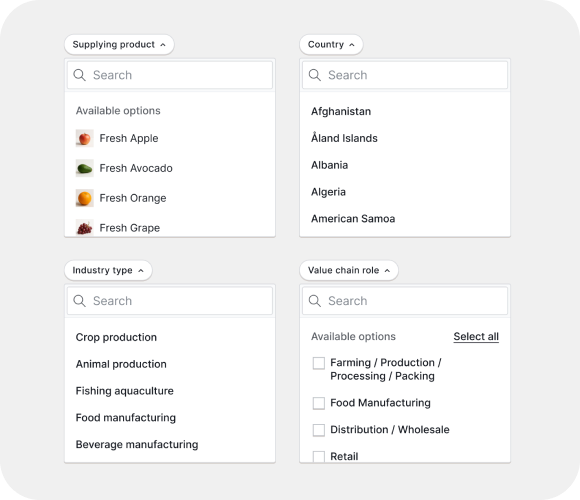
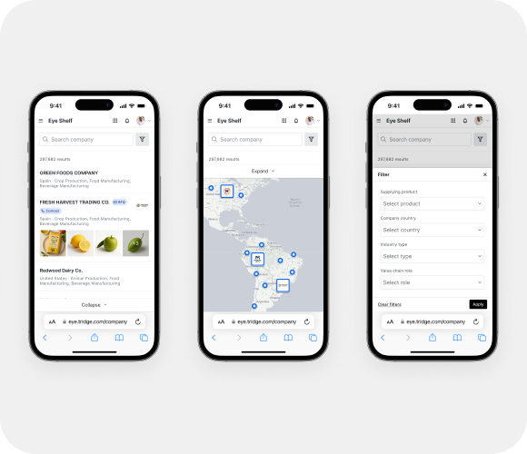

Tridge
Map-Based Food Trade Company Directory
Bringing engagement back to company pages

Supplier connections on a B2B agri-trade platform with 1.2M MAU fell to zero in Q1 2025. As the service shifted to an application-centric product, the goal was to keep its core value and get users exploring and contacting companies again.
I redesigned the directory in two iterations, first the company pages and then a map for exploring.

Problem
Users found promising companies but rarely took the next step. Profile views and interactions stayed low. Analysis and profiles also sat on separate pages, so one company was split across two places.
Insight
Yet traders see a company as one business, and the trade data agreed. Many companies both bought and sold.
Solution
So I redefined trade as every interaction that leads to a purchase. With the data governance team, we turned that definition into one company model that serves everything from analysis to quote requests.
Before · Two separate company models
After · One unified company model
01
All company information in one place
Once trade meant every interaction that leads to a purchase, each company needed a single home. Every company now has one page, and its information sits in tabs that can grow as the data grows. Behind the page, one company account stands for one real company. It links to a record that AI built from existing data, so the structure was fixed early and every view of a company sits under it.
The old supplier profile assumed a role. I took it apart and rebuilt it as one company profile that works whether the data shows buying, selling or both. Trade details come first, and there is still room for each company's brand story.

Company page
Every view of a company now sits under one page. Users no longer jump between two places to understand one business.
02
From browsing to quoting
In trade, buyers often ask suppliers for a catalogue first. The old catalogue was a static web page for viewing only. Now products listed in the seller centre appear on the company page, right next to its trade details. Buyers can request a quote on any product they like, for that one product rather than a whole category.
Analysis lives on the same page too. I visualised each company's export and import data, from overall trade volume down to single records. Users can read a market and check a partner before they trade.

Trade data at a glance
Overall trade volume and the partners behind it, shown for every company. Users can spot new opportunities such as export markets and supply deals.

Down to single records
Users can switch between export and import data and scan reported trade records. It helps them decide with more confidence before they trade.
03 · 2nd iteration
Finding companies on a map
After the first iteration, users still had to open each profile to see where a company was. So they searched only for companies they already knew. The directory became a place to revisit them rather than to discover new suppliers.
In food trade, the same product differs by origin. Lemons from Amalfi and from Spain vary in quality and price, while distance sets shipping time and cost. That is why location is often the first filter when buyers look for new suppliers. I put every company on a map, with the list and the map moving together as users explore.


Ranking that rewards complete profiles
With over 150K entries and growing, loading everything at once would overwhelm both users and the system. Ranking brings the most relevant companies to the top, and every detail a company adds moves it further up.

Filters that match how traders search
Filters follow the way traders narrow a search. Users can find relevant companies even when many kinds share one region.

Mobile kept to the essentials
As a work tool, the service was designed web-first. On mobile, the list sits over the map and filters open in a modal, which keeps a small screen easy to scan.
Results
Better discovery, stronger engagement
It became the most visited feature in the service. From August to September 2025, profile conversion rose 1.8x. Each active company viewed 146 profiles on average in September, up from 23 in August. 60% of profile views came from browsing the ranked list rather than searching a name, which suggests users were discovering new companies.
The directory was also part of what the sales team offered in new deals. Clients include Loblaw in Canada and Simplot, a major supplier of McDonald's fries. In South Korea, 9 of the top 29 signed on, each a manufacturer with over USD 700M in annual sales. Three later renewed after expanding their use of the service.
1.8x
Profile conversion
6.3x
Profiles viewed per active company
60%
Profile views from the ranked list
Aug – Sep 2025, measured in Amplitude